Champi et Gnon transforment les soins en pression. Un champignon qui semble inactif peut devenir un attaquant supplémentaire, et chaque cycle de soins peut augmenter les dégâts de Graines pourrissantes. C'est pourquoi je développe ce tank de la Nature autour d'une question simple : l'équipe peut-elle maintenir les champignons en vie assez longtemps pour qu'ils s'activent ?
Dans ce guide, j'explique dans quelles compétences et améliorations j'investirais en premier, quand changer de talisman et comment composer une équipe qui soutient les invocations. Commencez par la survie et des soins réguliers ; investissez ensuite dans les dégâts qui tirent parti de ces deux éléments.
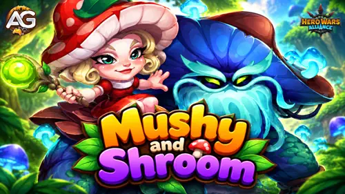
Qui sont Champi et Gnon(Mushy & Shroom) dans Hero Wars Alliance ?
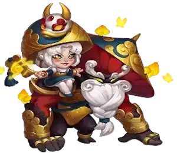
- Classe principale : Tank
- Position : Première ligne
- Statistique principale : Intelligence
- Faction : Voie de la Nature
- Partenaires essentiels : Alvanor et des soigneurs fiables
Copie parfaite crée des Gnon supplémentaires, initialement inactifs. Les soigner jusqu'à leur rendre toute leur Santé active leurs attaques et les compétences apprises. Les Champignons à spores ont eux aussi besoin de soins avant de se précipiter vers l'avant et d'exploser. Votre soutien en soins détermine donc la vitesse à laquelle le champ de bataille se remplit de menaces actives.
La principale limite est le temps de préparation : les Gnon invoqués ne peuvent pas gagner d'énergie et leurs statistiques sont copiées à partir de celles du début du combat. Ne vous attendez pas à ce qu'une invocation inactive attaque immédiatement.
Champi et Gnon(Mushy & Shroom) — Comparaison des statistiques maximales avec talismans
Les deux colonnes utilisent le niveau 120, six étoiles, le rang Orange +4 avec tous les objets, des apparences de niveau 60 dont l'Apparence lunaire+, des glyphes de niveau 80, des artefacts six étoiles de niveau 100 et le Don des éléments de niveau 30. Chaque talisman est de niveau 50, avec des statistiques de reforge maximales. Les bonus de collection, les recherches du Royaume et les bonus temporaires sont exclus.
| Statistique |
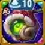 Talisman du mycélium |
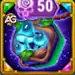 Talisman des champignons |
|---|---|---|
|
Intelligence
|
15 214 | 13 214 |
|
Agilité
|
2 344 | 2 344 |
|
Force
|
2 829 | 2 829 |
|
Santé
|
525 951 | 525 951 |
|
Attaque physique
|
19 952 | 17 952 |
|
Attaque magique
|
110 425 | 104 425 |
|
Armure
|
57 759 | 37 959 |
|
Défense magique
|
43 394 | 41 394 |
|
Pénétration magique
|
10 650 | 10 650 |
|
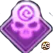 Chances de coup critique magique |
0 | 4 000 |
|
Ténacité
|
2 571 | 9 171 |
Le bonus d'Armure de l'arme pour l'équipe est temporaire et n'est pas inclus dans ces totaux. Aucun des deux talismans ne modifie la Santé maximale dans cette comparaison.
Guide des talismans de Champi et Gnon
Ma recommandation : utilisez le 1er talisman, le Talisman du mycélium, en JcJ ; utilisez le 2e talisman, le Talisman des champignons, en JcE. Le Mycélium associe Intelligence et Armure, tandis que les Champignons associent Chances de coup critique magique et Ténacité.
Seul le talisman équipé fournit ses bonus. Les apparences fonctionnent différemment : leurs bonus de statistiques débloqués restent actifs quelle que soit l'apparence affichée. Pour les reforges, évaluez le total cumulé des trois emplacements.
1 — Talisman du mycélium
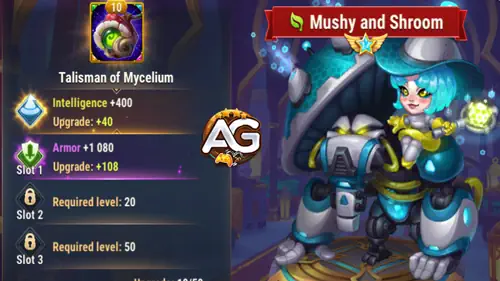
| Statistique principale | Bonus cumulé des reforges |
|---|---|
| Intelligence +2 000 | Armure +19 800 |
Le Mycélium est le talisman que je recommande en JcJ, où son Intelligence et son Armure soutiennent Champi face aux équipes de héros adverses. Son Intelligence ajoute 6 000 Attaque magique (2 000 × 3), 2 000 de Défense magique et 2 000 d'Attaque physique. Le total de +19 800 d'Armure aide contre les dégâts physiques, tandis que l'Attaque magique améliore les formules des compétences concernées.
2 — Talisman des champignons
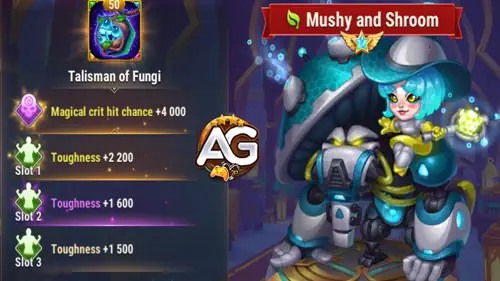
| Statistique principale | Bonus cumulé des reforges |
|---|---|
| Chances de coup critique magique +4 000 | Ténacité +6 600 |
Les Champignons sont le talisman que je recommande en JcE. Il échange l'Intelligence et l'Armure contre un potentiel de coups critiques magiques et une réduction des dégâts lorsque la Santé est faible. Ses +4 000 de Chances de coup critique magique augmentent la probabilité de coups critiques magiques ; il s'agit d'un score, pas d'une probabilité de 4 000 %. La Ténacité intervient lorsque la Santé passe sous 50 %, et son efficacité dépend de la statistique principale de l'attaquant.
Conseils d'Alexandre : Choisissez selon le mode de jeu : Mycélium en JcJ et Champignons en JcE. Le Mycélium soutient la première ligne en JcJ grâce à l'Armure et à l'Intelligence ; les Champignons sont mon choix en JcE pour les Chances de coup critique magique et la Ténacité. Les Champignons n'améliorent pas les formules de base par l'Attaque magique : une valeur de base de compétence inférieure dans la comparaison ne change donc pas ma recommandation selon le mode.
Priorité d'amélioration des compétences de Champi et Gnon
Découvrez comment Champi et Gnon transforment les soins en invocations actives et en dégâts, puis utilisez ces priorités de compétences pour établir une stratégie de combat régulière et efficace.
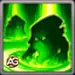
1 — Copie parfaite
Description dans le jeu : Invoque un Gnon inactif auquel il manque une partie de sa Santé. La copie possède les statistiques du héros au début du combat. Elle peut être ciblée par des attaques, des sorts offensifs et des sorts de soins.
Lorsque la Santé du Gnon est entièrement rétablie pour la première fois, il s'active. Il peut ensuite attaquer et utiliser toutes les compétences apprises par le héros, mais ne peut pas récupérer d'énergie.
Vous ne pouvez pas invoquer plus de 5 Gnon.
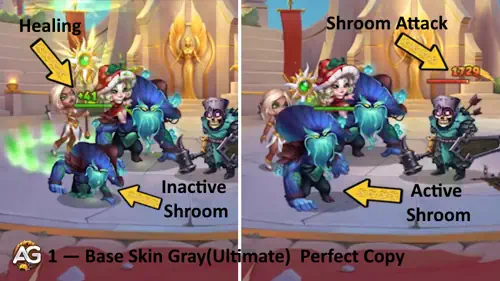
Explication de la compétence : Une copie entièrement soignée ajoute un Gnon actif supplémentaire. Considérez les soins comme le déclencheur de l'activation, et pas seulement comme une récupération après des dégâts.
Formule avec le Talisman du mycélium
- Santé initiale du Gnon : 272 677,95 (45 % × 525 951 Santé + 300 × 120).
Formule avec le Talisman des champignons
- Santé initiale du Gnon : 272 677,95 (45 % × 525 951 Santé + 300 × 120).
Informations sur l'animation de la compétence
- Niveau de la compétence : 120
- Délai d'animation : 1,2 seconde
Priorité d'évolution : Très élevée — Davantage de copies actives renforcent le mécanisme des combats prolongés et ajoutent des sources de pression.
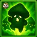
2 — Mycélium ramifié
Description dans le jeu : Invoque un mycélium avec 3 Champignons à spores inactifs auxquels il manque une partie de leur Santé. Ils peuvent être ciblés par des attaques, des sorts offensifs et des sorts de soins. Leur Santé maximale correspond à 30 % de celle du héros au début du combat.
Une fois sa Santé entièrement rétablie, le champignon court vers les ennemis et explose, infligeant des dégâts et répandant un nuage de Spores de champignon à courte portée. Le nuage réduit au Silence les ennemis à sa portée pendant 4 secondes.
Les ennemis proches qui ne sont pas encore affectés par les Spores de champignon sont prioritaires lors du choix de la cible.
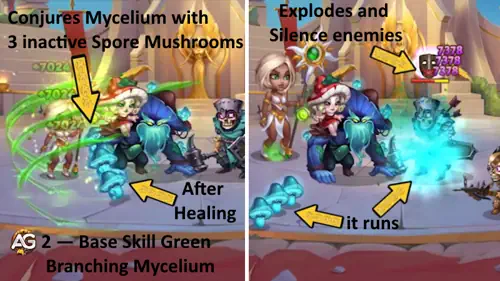
Explication de la compétence : Ces trois champignons infligent des dégâts différés et appliquent un Silence. Un ennemi réduit au Silence ne peut pas utiliser de compétences infligeant des dégâts magiques ou purs, de compétences sans dégâts ni de compétences dont l'efficacité dépend de l'Attaque magique ; les attaques physiques et les compétences physiques autorisées peuvent continuer.
Formule avec le Talisman du mycélium
- Santé maximale du Champignon à spores : 157 785,3 (30 % × 525 951 Santé).
- Santé initiale : 52 595,1 (10 % × 525 951 Santé).
- Dégâts de l'explosion : 10 % Santé + 25 % Attaque magique + 70 × 120 = 88 601,35 (52 595,1 + 27 606,25 + 8 400).
Formule avec le Talisman des champignons
- Santé maximale du Champignon à spores : 157 785,3 (30 % × 525 951 Santé).
- Santé initiale : 52 595,1 (10 % × 525 951 Santé).
- Dégâts de l'explosion : 10 % Santé + 25 % Attaque magique + 70 × 120 = 87 101,35 (52 595,1 + 26 106,25 + 8 400).
Informations sur l'animation de la compétence
- Niveau de la compétence : 120
- Temps de recharge initial : 3 secondes
- Temps de recharge : 12 secondes
- Délai d'animation : 0,88 seconde
- Durée du Silence : 4 secondes
- Zone : 100
Priorité d'évolution : Élevée — Les dégâts associés au Silence sont précieux, mais les champignons doivent d'abord être soignés jusqu'à récupérer toute leur Santé.
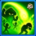
3 — Graines pourrissantes
Description dans le jeu : Inflige des dégâts à l'ennemi le plus proche. Les dégâts augmentent pour chaque point de soins reçu par les alliés depuis la dernière activation de cette compétence.
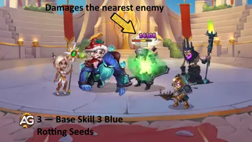
Explication de la compétence : C'est le bénéfice le plus direct d'un investissement dans des soins continus pour l'équipe. Ses dégâts supplémentaires augmentent avec les soins reçus depuis l'activation précédente.
Formule avec le Talisman du mycélium
- Dégâts de base : 10 % Santé + 40 % Attaque magique + 50 × 100 = 101 765,1 (52 595,1 + 44 170 + 5 000).
- Dégâts supplémentaires : 60 % × soins reçus par les alliés depuis l'activation précédente (100 000 de soins ajoutent 60 000 de dégâts).
Formule avec le Talisman des champignons
- Dégâts de base : 10 % Santé + 40 % Attaque magique + 50 × 100 = 99 365,1 (52 595,1 + 41 770 + 5 000).
- Dégâts supplémentaires : 60 % — soins reçus par les alliés depuis l'activation précédente (100 000 de soins ajoutent 60 000 de dégâts).
Informations sur l'animation de la compétence
- Niveau de la compétence : 100
- Temps de recharge : 10 secondes
- Délai d'animation : 1,5 seconde
Priorité d'évolution : Très élevée — Elle transforme les soins dont votre équipe a déjà besoin en dégâts directs contre l'ennemi le plus proche.
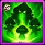
4 — Croissance sauvage
Description dans le jeu : Compétence passive. Champi soigne les Gnon inactifs et les Champignons à spores.
Cet effet se cumule pour chaque Gnon actif sur le champ de bataille.
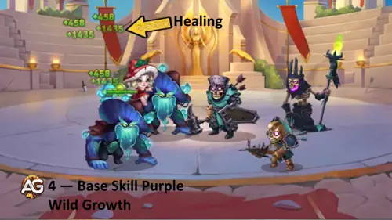
Explication de la compétence : Champi aide les invocations inactives à atteindre leur seuil d'activation. Chaque Gnon actif ajoute un cumul supplémentaire de cet effet de soins.
Formule avec le Talisman du mycélium
- Soins par seconde et par cumul : 1 % Santé + 4 % Attaque magique + 10 × 80 = 10 476,51 (5 259,51 + 4 417 + 800).
Formule avec le Talisman des champignons
- Soins par seconde et par cumul : 1 % Santé + 4 % Attaque magique + 10 × 80 = 10 236,51 (5 259,51 + 4 177 + 800).
Informations sur l'animation de la compétence
- Niveau de la compétence : 80
- Intervalle de soins : 1 seconde
Priorité d'évolution : Très élevée — Elle soutient à la fois l'activation des copies et le lancement des Champignons à spores, reliant ainsi les autres compétences.
Compétences de la relique légendaire de Champi et Gnon
La relique légendaire débloque Spores voraces au niveau 1, améliore Copie parfaite au niveau 10 et Croissance sauvage au niveau 20, puis ajoute Écho mycélien au niveau 30. Les quatre améliorations sont présentées dans cet ordre.
Au niveau 30 de la relique, Champi et Gnon reçoivent au total +430 848 de Santé et +28 667 d’Attaque magique. Il s’agit des bonus totaux fournis par la relique.
Bonus de caractéristiques de la relique légendaire
| Niveau de relique | Bonus total de Santé | Bonus total d’Attaque magique | Compétence débloquée |
|---|---|---|---|
| 1 | +42 658 | +2 838 | Spores voraces (Voracious Spores) |
| 10 | +80 632 | +5 270 | Copie parfaite |
| 20 | +226 204 | +14 495 | Croissance sauvage |
| 30 | +430 848 | +28 667 | Écho mycélien (Mycelial Echo) |
Chaque ligne indique le bonus total de la relique à ce niveau. Utilisez la ligne correspondant à votre niveau actuel sans additionner les lignes. Au niveau 10, le bonus total est de +80 632 de Santé et +5 270 d’Attaque magique.
Coûts en éclats de relique
| Niveau de relique | Éclats supplémentaires depuis le palier précédent | Total des éclats depuis le niveau 0 |
|---|---|---|
| 1 | 50 | 50 |
| 10 | 280 | 330 |
| 20 | 800 | 1 130 |
| 30 | 1 750 | 2 880 |
La colonne centrale indique le coût depuis le palier précédent. Passer du niveau 20 au niveau 30 nécessite 1 750 éclats supplémentaires, soit 2 880 au total du niveau 0 au niveau 30. Ce n’est pas le coût du seul passage du niveau 29 au niveau 30.
Formules de la relique : appliquez le multiplicateur de chaque compétence aux caractéristiques concernées en combat. Le tableau indique les bonus totaux de chaque niveau ; n’additionnez pas les lignes.
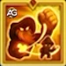
Niveau de relique 1 — Spores voraces (Voracious Spores) — Nouvelle compétence
Description de la compétence : À partir de la cinquième seconde du combat, puis toutes les 12 secondes, inflige des dégâts à l’ennemi ayant la Santé maximale la plus élevée et vole un montant de Santé maximale égal à 50% des dégâts infligés.
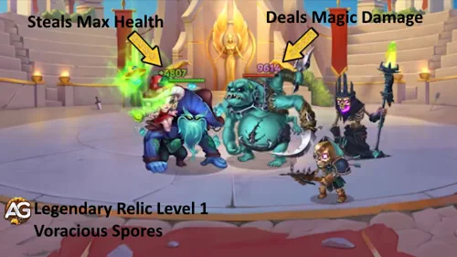
Explication de la compétence : Spores voraces cible l’ennemi ayant la Santé maximale la plus élevée, et non celui ayant le plus de Santé restante. La Santé maximale volée correspond à la moitié des dégâts réellement infligés : un seul coup ne retire pas la moitié de la Santé maximale de la cible.
- Formule des dégâts : 150% de l’Attaque magique.
- Santé maximale volée : 50% des dégâts réellement infligés.
- Première activation : après 5 secondes de combat.
- Intervalle : 12 secondes.
Tests d’Alexandre : Lors de mon test avec Eva, Guus, Crow, Byrna et Champi et Gnon contre Julius, Crow, Polaris, Peech et Miu, mon équipe a perdu sans relique. Après le déblocage du niveau 1, elle a remporté tous les combats de ce test. Ce résultat concerne cette confrontation et ne garantit pas une victoire contre toutes les équipes.
Informations de déblocage de la relique au niveau 1
| Information | Valeur |
|---|---|
| Éclats supplémentaires depuis le palier précédent |
50
|
| Total des éclats depuis le niveau 0 |
50
|
| Bonus total de Santé au niveau 1 |
+42 658
|
| Bonus total d’Attaque magique au niveau 1 |
+2 838
|
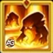
Niveau de relique 10 — Copie parfaite — Amélioration
Description de la compétence : Les copies de Gnon reçoivent la relique lorsqu’elles s’activent et commencent à utiliser Spores voraces 5 secondes plus tard.
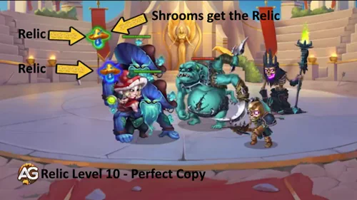
Explication de la compétence : Les copies actives deviennent des sources supplémentaires de Spores voraces. Chaque copie doit toujours être soignée jusqu’à sa Santé maximale pour s’activer, puis attendre 5 secondes avant ses attaques de relique. Cette amélioration ne permet pas aux copies de générer de l’énergie.
- Compétence améliorée : Copie parfaite, la première compétence de base.
- Transmission de la relique : à l’activation d’une copie de Gnon.
- Début de Spores voraces : 5 secondes après cette activation.
- Énergie : les copies ne peuvent toujours pas en générer.
Tests d’Alexandre : Après d’autres essais, notamment contre des équipes avec Satori et Leonel, j’ai monté la relique du niveau 1 au niveau 10. Champi et Gnon sont devenus plus offensifs, ont mieux encaissé et ont obtenu de bons résultats sans second tank. Les équipes avec Mojo ont aussi bien fonctionné.
Informations de déblocage de la relique au niveau 10
| Information | Valeur |
|---|---|
| Éclats supplémentaires depuis le palier précédent |
280
|
| Total des éclats depuis le niveau 0 |
330
|
| Bonus total de Santé au niveau 10 |
+80 632
|
| Bonus total d’Attaque magique au niveau 10 |
+5 270
|
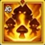
Niveau de relique 20 — Croissance sauvage — Amélioration
Description de la compétence : Chaque fois que Champi ou une copie active de Gnon reçoit des soins, sa Pénétration magique augmente pendant 4 secondes. Cet effet se cumule pour chaque copie active sur le champ de bataille.
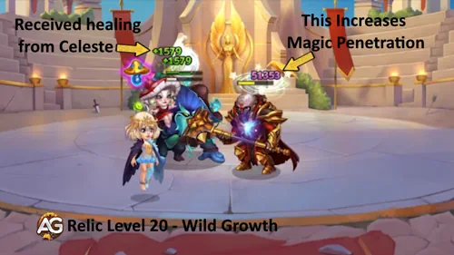
Explication de la compétence : Les soins restaurent la Santé et donnent désormais un bonus de Pénétration magique pendant quatre secondes. L’effet se cumule avec les copies actives : des soins réguliers et davantage de copies aident à traverser la Défense magique ennemie.
- Compétence améliorée : Croissance sauvage, la quatrième compétence de base.
- Déclencheur : Champi ou une copie active de Gnon reçoit des soins.
- Bonus de Pénétration magique : 10% de l’Attaque magique.
- Durée : 4 secondes ; cumulable avec les copies actives.
Tests d’Alexandre : Miu, Guus, Crow, Byrna et Champi et Gnon ont très bien fonctionné au niveau 20. Champi et Gnon ont tenu la première ligne, profité du bonus de Miu et infligé davantage de dégâts. J’ai aussi obtenu de bons résultats avec Leonel et Mojo.
Informations de déblocage de la relique au niveau 20
| Information | Valeur |
|---|---|
| Éclats supplémentaires depuis le palier précédent |
800
|
| Total des éclats depuis le niveau 0 |
1 130
|
| Bonus total de Santé au niveau 20 |
+226 204
|
| Bonus total d’Attaque magique au niveau 20 |
+14 495
|
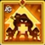
Niveau de relique 30 — Écho mycélien (Mycelial Echo) — Nouvelle compétence
Description de la compétence : Chaque fois qu’un ennemi reçoit des soins, Champi et toutes les copies de Gnon, même inactives, copient 50% de ces soins sur eux-mêmes. Les soins copiés par une compétence équivalente ne déclenchent pas cet effet.
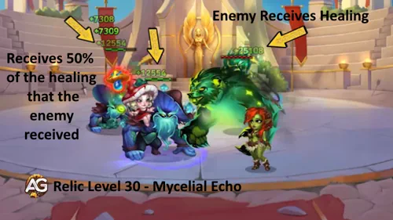
Explication de la compétence : Champi et chaque copie de Gnon, même inactive, reçoivent 50% des soins ennemis admissibles. Cela peut aider à activer les copies inactives. Ces soins copiés déclenchent aussi l’amélioration de Croissance sauvage du niveau 20. Des soins déjà copiés par une compétence équivalente ne provoquent pas une nouvelle copie.
- Soins copiés : 50% des soins ennemis admissibles.
- Bénéficiaires : Champi et toutes les copies de Gnon, même inactives.
- Exemple : des soins ennemis de 100 000 produisent une copie de 50 000 pour chaque bénéficiaire, dans la limite de sa Santé manquante.
- Interaction : les soins copiés déclenchent l’amélioration de Croissance sauvage du niveau 20.
- Exception : les soins copiés par une compétence équivalente.
Tests d’Alexandre : Au niveau 30, Champi et Gnon ont beaucoup mieux encaissé et ont obtenu de meilleurs résultats dans des équipes variées en Arène. J’ai également observé davantage de dégâts contre les Hydres et de meilleurs résultats en JcE et JcJ dans le Royaume, même sans compétences de Royaume.
Informations de déblocage de la relique au niveau 30
| Information | Valeur |
|---|---|
| Éclats supplémentaires depuis le palier précédent |
1 750
|
| Total des éclats depuis le niveau 0 |
2 880
|
| Bonus total de Santé au niveau 30 |
+430 848
|
| Bonus total d’Attaque magique au niveau 30 |
+28 667
|
Ma priorité d’investissement dans la relique : le niveau 1 est le premier déblocage à envisager si vous jouez Champi et Gnon. Avec des ressources limitées, je vise le niveau 10 pour les gains offensifs et défensifs observés. Les niveaux 20 et 30 conviennent davantage à un héros bien développé, utilisé régulièrement dans plusieurs modes. Le dernier palier coûte à lui seul 1 750 éclats : comparez cette dépense aux autres priorités de votre compte.
▶️ Vidéo: J’ai testé la relique de Champi à chaque niveau — Vaut-elle le coup ?

▶ Regarder cette vidéo sur YouTube
Meilleures apparences pour Champi et Gnon
Choisissez les apparences de Champi et Gnon selon leur effet sur la survie, les soins et les dégâts. Conservez leur ordre d'affichage tout en suivant mes priorités d'amélioration ci-dessous.
Apparence par défaut
Bonus au niveau 60 : Intelligence +1 365.
L'Intelligence soutient les dégâts, les soins passifs et la résistance magique. Avec +1 365 d'Intelligence, elle accorde +4 095 d'Attaque magique, +1 365 de Défense magique et +1 365 d'Attaque physique.
Pierres d'apparence : 30 825.
Priorité d'évolution : Élevée — L'Intelligence soutient les dégâts, les soins passifs et la résistance magique.
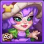
Apparence printanière
Bonus au niveau 60 : Défense magique +10 650.
Utile contre la pression magique. Améliorez-la plus tôt si les dégâts magiques sont la cause de l'effondrement de votre première ligne.
Pierres d'apparence : 55 410 au total (5 000 pour l'achat + 50 410 pour les améliorations).
Priorité d'évolution : Moyenne — Utile contre la pression magique.
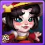
Apparence lunaire+
Bonus au niveau 60 : Attaque magique +10 650; Total de l'Apparence+ : +21 300.
L'Attaque magique améliore Graines pourrissantes, les explosions et les soins passifs. L'apparence de base accorde +10 650 ; posséder l'Apparence+ double ce bonus à +21 300.
Pierres d'apparence : 55 410 au total (5 000 pour l'achat + 50 410 pour les améliorations). Le déblocage de l'Apparence+ est distinct ; le coût d'amélioration en pierres d'apparence reste identique.
Priorité d'évolution : Très élevée — L'Attaque magique améliore Graines pourrissantes, les explosions et les soins passifs.
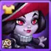
Apparence démoniaque
Bonus au niveau 60 : Armure +10 650.
L'Armure donne à la première ligne davantage de temps pour atteindre ses premiers cycles de soins face aux attaquants physiques.
Pierres d'apparence : 55 410 au total (5 000 pour l'achat + 50 410 pour les améliorations).
Priorité d'évolution : Élevée — L'Armure donne à la première ligne davantage de temps pour atteindre ses premiers cycles de soins face aux attaquants physiques.
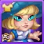
Apparence angélique
Bonus au niveau 60 : Santé +106 645.
La Santé améliore la survie ainsi que les composantes des invocations, des dégâts et des soins qui dépendent de la Santé. Prévoyez suffisamment de soins pour remplir ces réserves de Santé plus importantes.
Pierres d'apparence : 55 410 au total (5 000 pour l'achat + 50 410 pour les améliorations).
Priorité d'évolution : Très élevée — La Santé soutient plusieurs composantes des compétences à la fois.
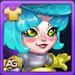
Apparence cybernétique
Bonus au niveau 60 : Armure +10 650.
C'est un autre bonus permanent d'Armure. Améliorez cette apparence pour la même raison que l'Apparence démoniaque : survivre aux dégâts physiques.
Pierres d'apparence : 55 410 au total (5 000 pour l'achat + 50 410 pour les améliorations).
Priorité d'évolution : Élevée — C'est un autre bonus permanent d'Armure.
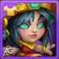
Apparence tribale
Bonus au niveau 60 : Pénétration magique +10 650.
La Pénétration magique aide les dégâts magiques à traverser la Défense magique ennemie. Elle n'augmente ni les soins ni la Santé des invocations.
Pierres d'apparence : 55 410 au total (5 000 pour l'achat + 50 410 pour les améliorations).
Priorité d'évolution : Moyenne à élevée — La Pénétration magique aide les dégâts magiques à traverser la Défense magique ennemie.
Conseils d'Alexandre : Je commencerais par l'Apparence angélique et l'Apparence lunaire+, puis je renforcerais l'Armure et l'Intelligence. Si Champi meurt avant l'activation des invocations, donnez la priorité à l'Armure avant de nouveaux investissements offensifs. Tous les bonus d'apparences débloqués se cumulent.
Priorité d'évolution des artefacts de Champi et Gnon
Comparez les priorités des artefacts de Champi et Gnon selon la Santé, l'Attaque magique et l'Intelligence permanentes, ainsi que l'Armure de l'équipe, pour investir vos ressources selon un plan.
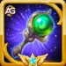
1 — Baguette de croissance (Arme)
Copie parfaite peut déclencher le bonus de +32 040 d'Armure de l'arme pour l'équipe pendant 9 secondes, avec 100 % de chances d'activation à six étoiles. Il protège l'équipe pendant la phase de mise en place.
Priorité d'évolution : Élevée — L'Armure de l'équipe fait gagner du temps pour les soins et les invocations.
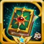
2 — Tome du savoir arcanique (Livre)
Le livre ajoute en permanence +53 394 de Santé et +10 680 d'Attaque magique. Ces deux statistiques soutiennent les formules des compétences, ce qui en fait mon premier investissement en artefacts.
Priorité d'évolution : Très élevée — La Santé et l'Attaque magique permanentes améliorent plusieurs composantes des compétences à la fois.
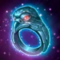
3 — Anneau d'intelligence (Anneau)
L'anneau ajoute +3 990 d'Intelligence : +11 970 d'Attaque magique, +3 990 de Défense magique et +3 990 d'Attaque physique. Il renforce la composante magique du développement sans remplacer la Santé du livre.
Priorité d'évolution : Élevée — L'Intelligence augmente l'Attaque magique et la Défense magique.
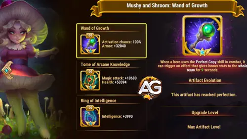
Priorité d'évolution des glyphes de Champi et Gnon
Développez les glyphes de Champi et Gnon autour de la Santé, de l'Attaque magique et de l'Intelligence, puis ajustez l'Armure et la Défense magique pour maintenir votre première ligne en vie plus longtemps.
1 — Attaque magique
Statistiques au niveau 80 : +12 850 Attaque magique.
L'Attaque magique augmente les dégâts et les soins de Croissance sauvage.
Priorité d'évolution : Élevée — L'Attaque magique augmente les dégâts et les soins de Croissance sauvage.
2 — Santé
Statistiques au niveau 80 : +122 800 Santé.
La Santé soutient la survie et les formules de compétences qui dépendent de la Santé.
Priorité d'évolution : Très élevée — La Santé soutient la survie et les formules de compétences qui dépendent de la Santé.
3 — Armure
Statistiques au niveau 80 : +12 850 Armure.
L'Armure aide la première ligne à survivre à la pression physique.
Priorité d'évolution : Élevée — L'Armure aide la première ligne à survivre à la pression physique.
4 — Défense magique
Statistiques au niveau 80 : +12 850 Défense magique.
La Défense magique améliore la survie face aux dégâts magiques ; augmentez sa priorité dans ces affrontements.
Priorité d'évolution : Moyenne — La Défense magique améliore la survie face aux dégâts magiques ; augmentez sa priorité dans ces affrontements.
5 — Intelligence
Statistiques au niveau 80 : +2 110 Intelligence.
L'Intelligence ajoute +6 330 d'Attaque magique, +2 110 de Défense magique et +2 110 d'Attaque physique au niveau 80.
Priorité d'évolution : Élevée — L'Intelligence ajoute +6 330 d'Attaque magique, +2 110 de Défense magique et +2 110 d'Attaque physique au niveau 80.
Comment contrer Champi et Gnon
Interrompez le cycle de soins et d'activation avant que les copies prennent de l'ampleur. Il s'agit d'options adaptées à certains affrontements, sans garantie de victoire contre toutes les compositions.
Flamme maudite empêche les cibles affectées de recevoir des soins, et Limbes convertit les soins bloqués en dégâts magiques. Priver les champignons inactifs de soins retarde le rétablissement complet de leur Santé et affaiblit la pression que l'équipe génère grâce aux soins.
Paralysie cible l'ennemi ayant l'Attaque magique la plus élevée. Lorsque cette cible est Champi, le contrôle interrompt les actions du héros principal ; Ombre redoutée et Liens des ténèbres ajoutent une pression ciblée. Vérifiez l'Attaque magique de toute l'équipe ennemie avant de le choisir.
Barrière de Rakashi absorbe les dégâts magiques et purs, ce qui entrave la pression magique. Serment de Rakashi empêche les dégâts magiques ou purs de l'achever tant que ses alliés présents au début du combat sont en vie. Prévoyez des dégâts physiques pour l'achever ou éliminez d'abord ses alliés.
Synergies de Champi et Gnon
Je recherche d'abord des soins continus, puis de la protection ou un autre héros infligeant des dégâts. Les partenaires suivants sont présentés par ordre alphabétique.
Étreinte de feu fournit des soins, tandis que Bouclier de flammes peut protéger un allié vulnérable. Les soins reçus contribuent à Graines pourrissantes. Tenez compte des sacrifices de Santé de ses compétences lorsque vous vérifiez si votre équipe survit au début du combat.
Rune de vie soigne l'équipe et double l'efficacité des soins pour les héros alliés de la Nature tant qu'elle est active. Rune de terre protège en permanence les alliés de la Nature contre les attaques de base. Cette combinaison soutient la survie de Champi et sa stratégie fondée sur les soins.
Reine des fleurs fournit des soins réguliers à l'équipe tant que la fleur survit. Ces cycles de soins aident l'équipe à maintenir la pression et contribuent à Graines pourrissantes. Protégez la fleur et laissez au mécanisme le temps de se mettre en place.
Xe'Sha ajoute des dégâts magiques et un bonus d'Attaque magique. Les sacrifices de Santé qu'elle impose aux alliés créent un besoin de soins, mais perdre de la Santé ne constitue pas en soi un soin : votre soigneur doit la rétablir pour qu'elle puisse contribuer aux dégâts de Champi fondés sur les soins.
Champi et Gnon : mes équipes testées
Ces compositions proviennent de mes tests avec Champi et Gnon. Les deux premières ont des résultats enregistrés en Arène avec la relique au niveau 30. La troisième est un premier test contre Chaos ; d’autres essais en Arène sont prévus. Les talismans utilisés figurent dans chaque tableau.
Équipe 1 — Eva, Guus, Crow, Champi et Gnon et Julius
Cette composition m’a donné de bons résultats en Arène après le développement de la relique de Champi et Gnon. J’ai utilisé Eva avec le Talisman 1, Guus avec le Talisman 2, Crow avec le Talisman 1, Champi et Gnon avec le Talisman 1 et Julius avec le Talisman 2.
|
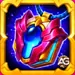 Talisman 1 |
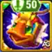 Talisman 2 |
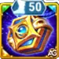 Talisman 1 |
Talisman 1 |
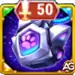 Talisman 2 |
|
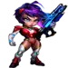 Eva |

Guus |
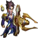 Crow |
Champi et Gnon |
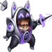 Julius |
Tests d’Alexandre : Avec la relique au niveau 30, Champi et Gnon ont beaucoup mieux encaissé et ont bien fonctionné dans diverses équipes d’Arène. Cette composition avec Eva, Guus, Crow, Champi et Gnon et Julius fait partie de celles qui ont obtenu de bons résultats sur mon compte.
Équipe 2 — Guus, Byrna, Tristan, Champi et Gnon et Luther
J’ai testé cette composition contre l’équipe Chaos composée de Cleaver, Byrna, Dorian, Kendle et Aidan. J’ai utilisé Guus avec le Talisman 1, Byrna avec le Talisman 2, Tristan avec le Talisman 1, Champi et Gnon avec le Talisman 1 et Luther avec le Talisman 1.
|
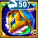 Talisman 1 |
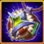 Talisman 2 |
Talisman 1 | Talisman 1 | Talisman 1 |
|
Guus |

Byrna |
Tristan |
Champi et Gnon |
Luther |
Tests d’Alexandre : Cette équipe a remporté des confrontations en Arène avec un écart de puissance supérieur à 150 000, y compris contre des adversaires équipés d’une relique légendaire de niveau 30. Elle a aussi battu la composition Chaos avec Cleaver, Electra, Byrna, Dorian et Kendle, que je ne parvenais auparavant à vaincre qu’avec Eva.
Équipe 3 — Guus, Byrna, Yasmine, Champi et Gnon et Electra
J’ai testé cette composition contre une équipe Chaos ayant 140 000 de puissance de plus. Ma première impression était excellente. Je prévois d’autres tests en Arène pour mieux explorer cette composition.
| Talisman 1 | Talisman 2 | Talisman 2 | Talisman 1 | Talisman 1 |
|
Guus |
Byrna |

Yasmine |
Champi et Gnon |
Electra |
Tests d’Alexandre : Ce premier test contre une équipe Chaos plus puissante était encourageant. D’autres tests en Arène sont prévus.
Équipes les plus populaires pour (Mushy & Shroom)Champi et Gnon dans Hero Wars Alliance
- Polaris, Orion, Morrigan, Champi, Corvus
- Aidan, Polaris, Xe'sha, Tempus, Champi
- Orion, Mojo, Alvanor, Champi, Aurora
- Martha, Aidan, Xe'sha, Champi, Astaroth
- Dark Star, Mojo, Alvanor, Champi, Aurora
- Orion, Mojo, Alvanor, Champi, Astaroth
- Orion, Mojo, Alvanor, Champi, Andvari
Champi et Gnon contre l'Hydre : ce que je teste en premier
L'intérêt dans les combats contre l'Hydre réside dans les dégâts continus : les soins permettent à l'équipe de rester opérationnelle et alimentent Graines pourrissantes pendant que les invocations se développent. Je teste d'abord une composition riche en soins, puis je compare les dégâts et la survie face à la même tête.
- Vérifiez si les copies s'activent assez tôt pour contribuer au combat.
- Gardez les soigneurs en vie pour répéter les cycles de soins.
- Commencez par le Talisman des champignons, ma recommandation en JcE, et comparez les résultats face à la même tête de l'Hydre dans des conditions similaires.
- Ne supposez pas que la composition seule garantit un total de dégâts fixe ou une élimination en un seul combat.
Consultez le guide des meilleures équipes contre l'Hydre pour d'autres idées de compositions.
Verdict final d'Alexandre
Je développerais (Mushy & Shroom)Champi et Gnon lorsque je dispose déjà d'un soutien en soins fiable. Commencez par la Santé, maintenez une première ligne stable et renforcez l'Attaque magique qui améliore les soins et les dégâts. Ma recommandation de talisman dépend du mode de jeu : le Mycélium en JcJ, avec Intelligence et Armure ; les Champignons en JcE, avec Chances de coup critique magique et Ténacité.
Le déroulement du combat que je souhaite voir est simple : les champignons inactifs récupèrent leur Santé, les copies commencent à attaquer et les soins répétés deviennent des dégâts. Si cette séquence ne se produit pas, corrigez les soins et la survie avant d'investir dans l'amélioration offensive suivante.